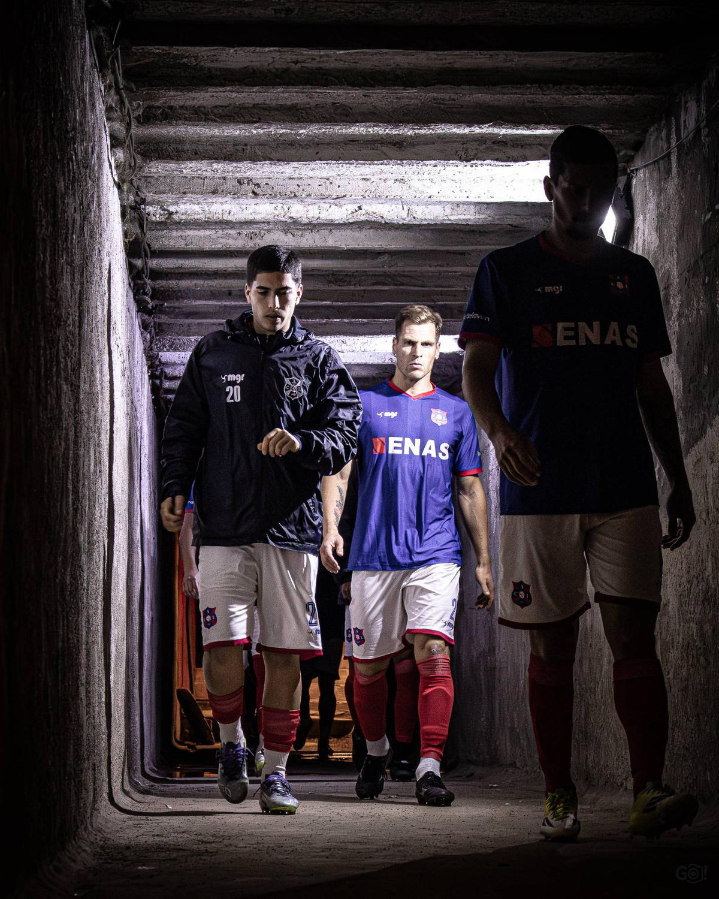
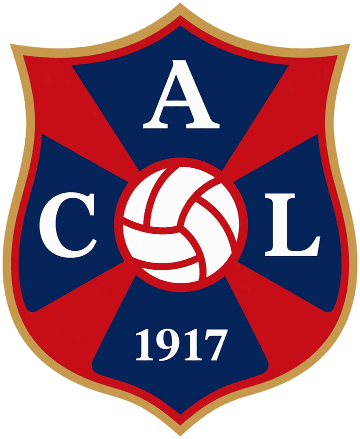

The Club Book · Volume 1917
ES
Become a member ↗

1917 · Montevideo
Centro AtléticoLito
Garra y Corazón
One neighbourhood. One shirt.
A history still being played out.
From Arroyo Seco since 1917.
Historic archive / Football today
The club, today
The next page
is played on the pitch.
See the schedule in Fixtures & Table.
Eight chapters. One shirt.
Step into our history.
Choose a chapter of the book.
The Club Book
Centro Atlético Lito · Montevideo · 1917
- I The Club From 1917 to today
- II Squad First team and youth sides
- III Fixtures & Table Sunday after Sunday
- IV News Press releases
- V Gallery Squad and match photographs
- VI The Next Chapter The new ground
- VII Become a Member Fees and sign-up
- VIII Contact Home, press and brand
Club volume · 2026 Become a Member


Official anthem
Lito querido,
cuadro invencible,
fuerte, aguerrido e irresistible.
Siempre Centro Lito adelante,
triunfante, triunfante,
porque tiene garra y corazón,
campeón, campeón.
Que proclaman tus parciales,
que son inmortales,
tu gloria y honor.
Centro Atlético Lito · Montevideo · 1917